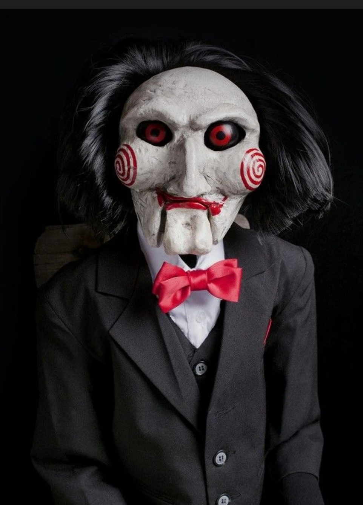

Ángel Josué Jiménez Pineda
501
Jigsaw, también conocido como John Kramer, es el famoso villano de la saga de terror *Saw*. Su disfraz se distingue por un traje negro elegante, camisa blanca, moño rojo y un rostro pálido con espirales rojas en las mejillas. Jigsaw no mata directamente; pone a prueba la moral y la voluntad de sus víctimas a través de juegos macabros.
Terror clásico psicológico
Traje formal negro con camisa blanca y moño rojo. Maquillaje blanco con círculos rojos en las mejillas, labios rojos y peluca negra con estilo despeinado. Accesorio: máscara de Jigsaw (permitido).
Declaro que mi disfraz cumple con todas las reglas de seguridad y respeto establecidas: no incluye armas, objetos peligrosos ni contenido ofensivo. El propósito del disfraz es únicamente artístico y recreativo.